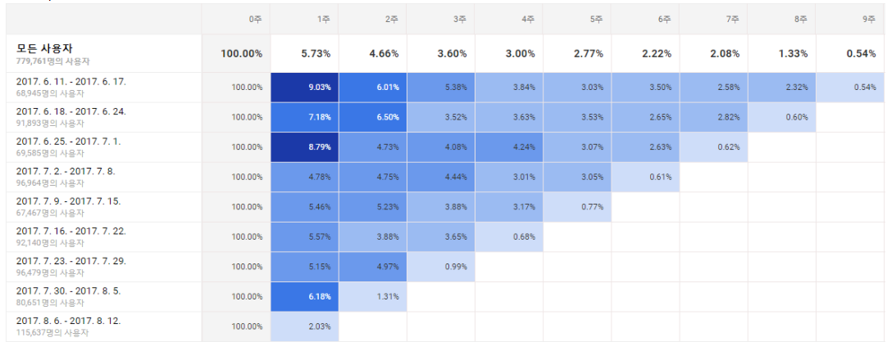
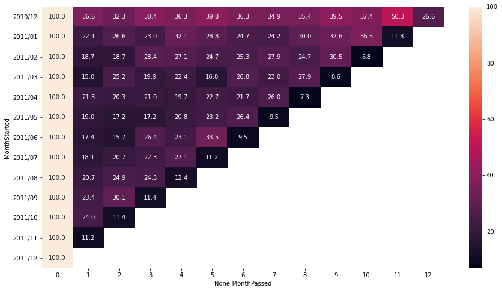

우수고객 선별하기(가장 소비를 많이 한 고객),고객 코호트 분석
학습목표
- 소비 우수고객 찾기
- 고객 retention
from datetime import datetime
import numpy as np
import pandas as pd
import seaborn as sns
from matplotlib import pyplot as plt
%matplotlib inline
- seaborn은 matplotlib 처럼 그래프를 그리는 기능이다(matplotlib으로 그래프 그리는 꿀팁이 궁금하다면?). matplotlip으로도 대부분의 시각화는 가능하지만 아래와 같은 이유들로 seaborn을 더 선호하는 추세이다.
- seaborn에서만 제공되는 통계 기반 plot
- 특별하게 꾸미지 않아도 깔끔하게 구현되는 기본 color
- 더 아름답게 그래프 구현이 가능한 palette 기능
-
- pandas 데이터프레임과 높은 호환성
- hue 옵션으로 bar 구분이 가능하며, xtick, ytick, xlabel, ylabel, legend 등이 추가적인 코딩 작업없이 자동으로 세팅된다.
dtypes = {
'UnitPrice': np.float32,
'CustomerID': np.int32,
'Quantity': np.int32
}
retail = pd.read_csv('./OnlineRetailClean.csv', dtype=dtypes)
retail['InvoiceDate'] = pd.to_datetime(retail['InvoiceDate'], infer_datetime_format=True) # infer_datetime_format=True 날짜시간 포맷 추정해서 파싱하기
retail.head()
| Unnamed: 0 | InvoiceNo | StockCode | Description | Quantity | InvoiceDate | UnitPrice | CustomerID | Country | CheckoutPrice | |
|---|---|---|---|---|---|---|---|---|---|---|
| 0 | 0 | 536365 | 85123A | WHITE HANGING HEART T-LIGHT HOLDER | 6 | 2010-12-01 08:26:00 | 2.55 | 17850 | United Kingdom | 15.30 |
| 1 | 1 | 536365 | 71053 | WHITE METAL LANTERN | 6 | 2010-12-01 08:26:00 | 3.39 | 17850 | United Kingdom | 20.34 |
| 2 | 2 | 536365 | 84406B | CREAM CUPID HEARTS COAT HANGER | 8 | 2010-12-01 08:26:00 | 2.75 | 17850 | United Kingdom | 22.00 |
| 3 | 3 | 536365 | 84029G | KNITTED UNION FLAG HOT WATER BOTTLE | 6 | 2010-12-01 08:26:00 | 3.39 | 17850 | United Kingdom | 20.34 |
| 4 | 4 | 536365 | 84029E | RED WOOLLY HOTTIE WHITE HEART. | 6 | 2010-12-01 08:26:00 | 3.39 | 17850 | United Kingdom | 20.34 |
우수 고객 확인
- 구매 횟수 기준
- 지불 금액 기준
retail.groupby('CustomerID').count()['Quantity'].sort_values(ascending=False)
CustomerID
17841 7847
14911 5675
14096 5111
12748 4595
14606 2700
...
17846 1
13017 1
13099 1
13106 1
12346 1
Name: Quantity, Length: 4338, dtype: int64
retail.groupby('CustomerID').sum()['CheckoutPrice'].sort_values(ascending=False)
CustomerID
14646 280206.02
18102 259657.30
17450 194550.79
16446 168472.50
14911 143825.06
...
16878 13.30
17956 12.75
16454 6.90
14792 6.20
16738 3.75
Name: CheckoutPrice, Length: 4338, dtype: float64
사용자 retention 분석
- 월간 사용자 cohort를 바탕으로 월별 재구매율(retention) 분석하기
- heatmap으로 한눈에 재구매율을 파악 가능 -
사용자 기준으로 최초 구매한 월(month) 연산하기
- Month : 구매월(일(day)을 무시)
- MonthStarted: 사용자가 최초 구매한 달
def get_month_as_datetime(date):
return datetime(date.year, date.month, 1) #년,월,일
retail['Month'] = retail['InvoiceDate'].apply(get_month_as_datetime) # Month 컬럼 생성됨
retail.head()
| Unnamed: 0 | InvoiceNo | StockCode | Description | Quantity | InvoiceDate | UnitPrice | CustomerID | Country | CheckoutPrice | Month | |
|---|---|---|---|---|---|---|---|---|---|---|---|
| 0 | 0 | 536365 | 85123A | WHITE HANGING HEART T-LIGHT HOLDER | 6 | 2010-12-01 08:26:00 | 2.55 | 17850 | United Kingdom | 15.30 | 2010-12-01 |
| 1 | 1 | 536365 | 71053 | WHITE METAL LANTERN | 6 | 2010-12-01 08:26:00 | 3.39 | 17850 | United Kingdom | 20.34 | 2010-12-01 |
| 2 | 2 | 536365 | 84406B | CREAM CUPID HEARTS COAT HANGER | 8 | 2010-12-01 08:26:00 | 2.75 | 17850 | United Kingdom | 22.00 | 2010-12-01 |
| 3 | 3 | 536365 | 84029G | KNITTED UNION FLAG HOT WATER BOTTLE | 6 | 2010-12-01 08:26:00 | 3.39 | 17850 | United Kingdom | 20.34 | 2010-12-01 |
| 4 | 4 | 536365 | 84029E | RED WOOLLY HOTTIE WHITE HEART. | 6 | 2010-12-01 08:26:00 | 3.39 | 17850 | United Kingdom | 20.34 | 2010-12-01 |
retail.groupby('CustomerID')['Month']
<pandas.core.groupby.generic.SeriesGroupBy object at 0x000001F01E170610>
month_group = retail.groupby('CustomerID')['Month']
retail['MonthStarted'] = month_group.transform(np.min)
retail.tail() #최초로 이용한 달 검색
| Unnamed: 0 | InvoiceNo | StockCode | Description | Quantity | InvoiceDate | UnitPrice | CustomerID | Country | CheckoutPrice | Month | MonthStarted | |
|---|---|---|---|---|---|---|---|---|---|---|---|---|
| 397879 | 541904 | 581587 | 22613 | PACK OF 20 SPACEBOY NAPKINS | 12 | 2011-12-09 12:50:00 | 0.85 | 12680 | France | 10.20 | 2011-12-01 | 2011-08-01 |
| 397880 | 541905 | 581587 | 22899 | CHILDREN'S APRON DOLLY GIRL | 6 | 2011-12-09 12:50:00 | 2.10 | 12680 | France | 12.60 | 2011-12-01 | 2011-08-01 |
| 397881 | 541906 | 581587 | 23254 | CHILDRENS CUTLERY DOLLY GIRL | 4 | 2011-12-09 12:50:00 | 4.15 | 12680 | France | 16.60 | 2011-12-01 | 2011-08-01 |
| 397882 | 541907 | 581587 | 23255 | CHILDRENS CUTLERY CIRCUS PARADE | 4 | 2011-12-09 12:50:00 | 4.15 | 12680 | France | 16.60 | 2011-12-01 | 2011-08-01 |
| 397883 | 541908 | 581587 | 22138 | BAKING SET 9 PIECE RETROSPOT | 3 | 2011-12-09 12:50:00 | 4.95 | 12680 | France | 14.85 | 2011-12-01 | 2011-08-01 |
기준이 되는 월과 실제 구매 월의 차이 계산하기
- 각 구매가 최초 구매로 부터 얼마의 월이 지났는지 연산
- MonthPassed : 최초 구매월로부터의 월 차이
retail['MonthPassed'] = (retail['Month'].dt.year - retail['MonthStarted'].dt.year) * 12 + \
(retail['Month'].dt.month - retail['MonthStarted'].dt.month)
retail.tail()
| Unnamed: 0 | InvoiceNo | StockCode | Description | Quantity | InvoiceDate | UnitPrice | CustomerID | Country | CheckoutPrice | Month | MonthStarted | MonthPassed | |
|---|---|---|---|---|---|---|---|---|---|---|---|---|---|
| 397879 | 541904 | 581587 | 22613 | PACK OF 20 SPACEBOY NAPKINS | 12 | 2011-12-09 12:50:00 | 0.85 | 12680 | France | 10.20 | 2011-12-01 | 2011-08-01 | 4 |
| 397880 | 541905 | 581587 | 22899 | CHILDREN'S APRON DOLLY GIRL | 6 | 2011-12-09 12:50:00 | 2.10 | 12680 | France | 12.60 | 2011-12-01 | 2011-08-01 | 4 |
| 397881 | 541906 | 581587 | 23254 | CHILDRENS CUTLERY DOLLY GIRL | 4 | 2011-12-09 12:50:00 | 4.15 | 12680 | France | 16.60 | 2011-12-01 | 2011-08-01 | 4 |
| 397882 | 541907 | 581587 | 23255 | CHILDRENS CUTLERY CIRCUS PARADE | 4 | 2011-12-09 12:50:00 | 4.15 | 12680 | France | 16.60 | 2011-12-01 | 2011-08-01 | 4 |
| 397883 | 541908 | 581587 | 22138 | BAKING SET 9 PIECE RETROSPOT | 3 | 2011-12-09 12:50:00 | 4.95 | 12680 | France | 14.85 | 2011-12-01 | 2011-08-01 | 4 |
기준 월, MonthPassed를 기준으로 고객 카운팅
- 기준이 되는 월과 그 월로부터 지난 기간의 고객 수를 계산
def get_unique_no(x):
return len(np.unique(x))
cohort_group = retail.groupby(['MonthStarted', 'MonthPassed'])
cohort_df = cohort_group['CustomerID'].apply(get_unique_no).reset_index() #reset_index 함수로 index 없애기
cohort_df.head()
| MonthStarted | MonthPassed | CustomerID | |
|---|---|---|---|
| 0 | 2010-12-01 | 0 | 885 |
| 1 | 2010-12-01 | 1 | 324 |
| 2 | 2010-12-01 | 2 | 286 |
| 3 | 2010-12-01 | 3 | 340 |
| 4 | 2010-12-01 | 4 | 321 |
테이블 피벗
- pivot 함수를 이용하여 index는 MonthStarted, columns을 MonthPassed로 변경하여 테이블 변경
- 첫번째 column을 기준으로 100분위 연산
cohort_df = cohort_df.pivot(index='MonthStarted', columns='MonthPassed')
cohort_df.head()
| CustomerID | |||||||||||||
|---|---|---|---|---|---|---|---|---|---|---|---|---|---|
| MonthPassed | 0 | 1 | 2 | 3 | 4 | 5 | 6 | 7 | 8 | 9 | 10 | 11 | 12 |
| MonthStarted | |||||||||||||
| 2010-12-01 | 885.0 | 324.0 | 286.0 | 340.0 | 321.0 | 352.0 | 321.0 | 309.0 | 313.0 | 350.0 | 331.0 | 445.0 | 235.0 |
| 2011-01-01 | 417.0 | 92.0 | 111.0 | 96.0 | 134.0 | 120.0 | 103.0 | 101.0 | 125.0 | 136.0 | 152.0 | 49.0 | NaN |
| 2011-02-01 | 380.0 | 71.0 | 71.0 | 108.0 | 103.0 | 94.0 | 96.0 | 106.0 | 94.0 | 116.0 | 26.0 | NaN | NaN |
| 2011-03-01 | 452.0 | 68.0 | 114.0 | 90.0 | 101.0 | 76.0 | 121.0 | 104.0 | 126.0 | 39.0 | NaN | NaN | NaN |
| 2011-04-01 | 300.0 | 64.0 | 61.0 | 63.0 | 59.0 | 68.0 | 65.0 | 78.0 | 22.0 | NaN | NaN | NaN | NaN |
customer_cohort = cohort_df.div(cohort_df.iloc[:, 0], axis=0) * 100
#df.iloc[ ]는 row와 column의 이름을 그대로 쓰는 것이 아니라 각 row와 column의 인덱스 값으로 인덱싱하는 방법이다.
customer_cohort.head()
| CustomerID | |||||||||||||
|---|---|---|---|---|---|---|---|---|---|---|---|---|---|
| MonthPassed | 0 | 1 | 2 | 3 | 4 | 5 | 6 | 7 | 8 | 9 | 10 | 11 | 12 |
| MonthStarted | |||||||||||||
| 2010-12-01 | 100.0 | 36.610169 | 32.316384 | 38.418079 | 36.271186 | 39.774011 | 36.271186 | 34.915254 | 35.367232 | 39.548023 | 37.401130 | 50.282486 | 26.553672 |
| 2011-01-01 | 100.0 | 22.062350 | 26.618705 | 23.021583 | 32.134293 | 28.776978 | 24.700240 | 24.220624 | 29.976019 | 32.613909 | 36.450839 | 11.750600 | NaN |
| 2011-02-01 | 100.0 | 18.684211 | 18.684211 | 28.421053 | 27.105263 | 24.736842 | 25.263158 | 27.894737 | 24.736842 | 30.526316 | 6.842105 | NaN | NaN |
| 2011-03-01 | 100.0 | 15.044248 | 25.221239 | 19.911504 | 22.345133 | 16.814159 | 26.769912 | 23.008850 | 27.876106 | 8.628319 | NaN | NaN | NaN |
| 2011-04-01 | 100.0 | 21.333333 | 20.333333 | 21.000000 | 19.666667 | 22.666667 | 21.666667 | 26.000000 | 7.333333 | NaN | NaN | NaN | NaN |
customer_cohort = customer_cohort.round(decimals=2)
customer_cohort
| CustomerID | |||||||||||||
|---|---|---|---|---|---|---|---|---|---|---|---|---|---|
| MonthPassed | 0 | 1 | 2 | 3 | 4 | 5 | 6 | 7 | 8 | 9 | 10 | 11 | 12 |
| MonthStarted | |||||||||||||
| 2010-12-01 | 100.0 | 36.61 | 32.32 | 38.42 | 36.27 | 39.77 | 36.27 | 34.92 | 35.37 | 39.55 | 37.40 | 50.28 | 26.55 |
| 2011-01-01 | 100.0 | 22.06 | 26.62 | 23.02 | 32.13 | 28.78 | 24.70 | 24.22 | 29.98 | 32.61 | 36.45 | 11.75 | NaN |
| 2011-02-01 | 100.0 | 18.68 | 18.68 | 28.42 | 27.11 | 24.74 | 25.26 | 27.89 | 24.74 | 30.53 | 6.84 | NaN | NaN |
| 2011-03-01 | 100.0 | 15.04 | 25.22 | 19.91 | 22.35 | 16.81 | 26.77 | 23.01 | 27.88 | 8.63 | NaN | NaN | NaN |
| 2011-04-01 | 100.0 | 21.33 | 20.33 | 21.00 | 19.67 | 22.67 | 21.67 | 26.00 | 7.33 | NaN | NaN | NaN | NaN |
| 2011-05-01 | 100.0 | 19.01 | 17.25 | 17.25 | 20.77 | 23.24 | 26.41 | 9.51 | NaN | NaN | NaN | NaN | NaN |
| 2011-06-01 | 100.0 | 17.36 | 15.70 | 26.45 | 23.14 | 33.47 | 9.50 | NaN | NaN | NaN | NaN | NaN | NaN |
| 2011-07-01 | 100.0 | 18.09 | 20.74 | 22.34 | 27.13 | 11.17 | NaN | NaN | NaN | NaN | NaN | NaN | NaN |
| 2011-08-01 | 100.0 | 20.71 | 24.85 | 24.26 | 12.43 | NaN | NaN | NaN | NaN | NaN | NaN | NaN | NaN |
| 2011-09-01 | 100.0 | 23.41 | 30.10 | 11.37 | NaN | NaN | NaN | NaN | NaN | NaN | NaN | NaN | NaN |
| 2011-10-01 | 100.0 | 24.02 | 11.45 | NaN | NaN | NaN | NaN | NaN | NaN | NaN | NaN | NaN | NaN |
| 2011-11-01 | 100.0 | 11.15 | NaN | NaN | NaN | NaN | NaN | NaN | NaN | NaN | NaN | NaN | NaN |
| 2011-12-01 | 100.0 | NaN | NaN | NaN | NaN | NaN | NaN | NaN | NaN | NaN | NaN | NaN | NaN |
heatmap 출력하기
- seaborn의 heatmap 함수로 visualization!
xticks = np.arange(0, 13)
yticks = ['2010/12', '2011/01', '2011/02', '2011/03', '2011/04', '2011/05', '2011/06', '2011/07', '2011/08', '2011/09', '2011/10', '2011/11', '2011/12']
plt.figure(figsize = (15, 8))
sns.heatmap(customer_cohort,
annot=True,
xticklabels=xticks,
yticklabels=yticks,
fmt='.1f')
<AxesSubplot:xlabel='None-MonthPassed', ylabel='MonthStarted'>
